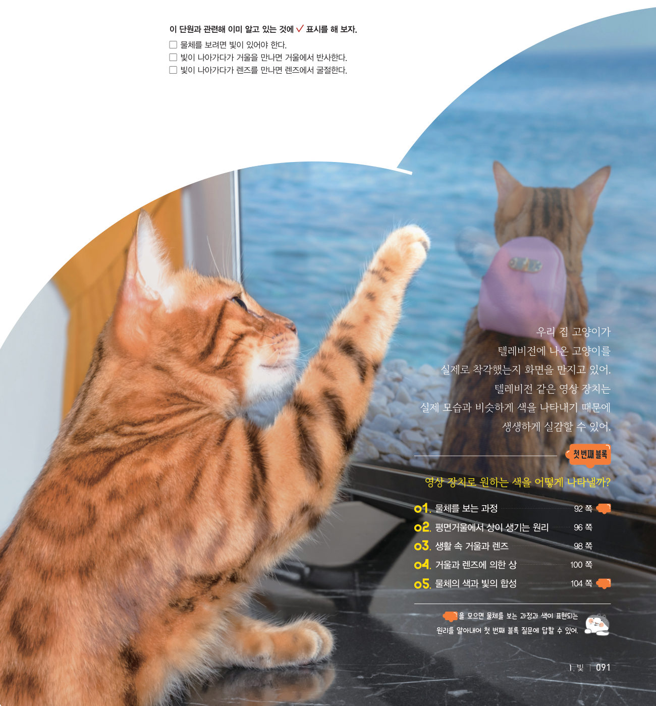
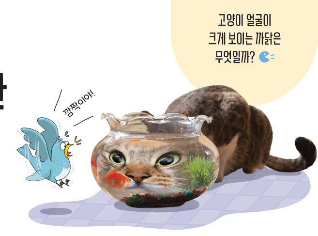
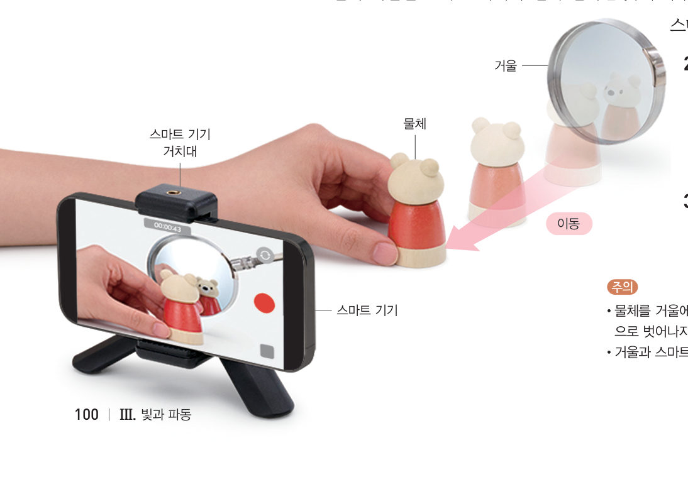
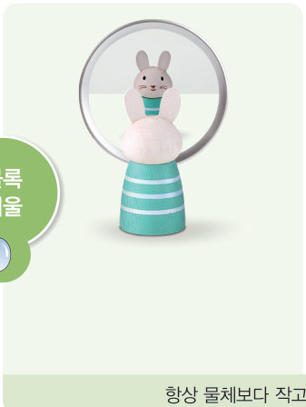
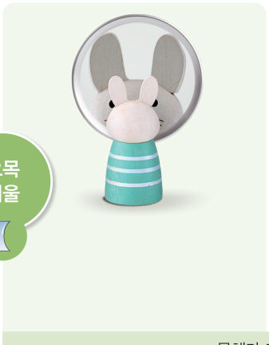
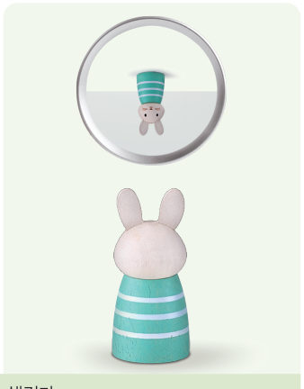
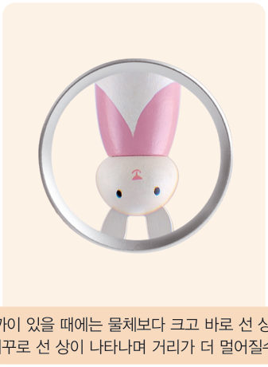
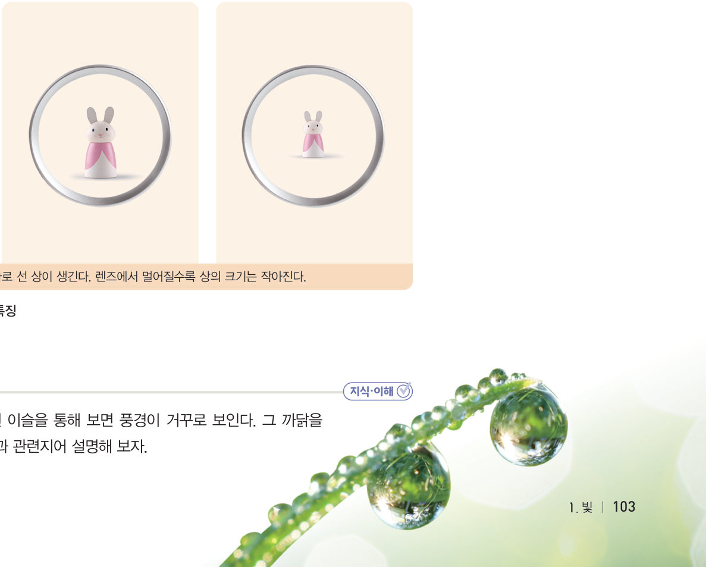

“깜짝이야!” 고양이 얼굴이 크게 보이는 까닭은 무엇일까? 가상 촬영 장치로 볼록·오목 거울과 볼록·오목 렌즈 앞의 물체를 점점 멀어지게 하며 상의 모양과 크기 변화를 비교해 보자.
거울과 렌즈는 그 면의 모양에 따라 상이 다양하게 나타난다.
상의 크기는 물체의 크기와 비교하고, 상의 모양은 바로 서 있는지 거꾸로 서 있는지 관찰한다.

| 거울·렌즈 | 상의 모양 변화 | 상의 크기 변화 |
|---|---|---|
| 볼록 거울 | ||
| 오목 거울 | ||
| 볼록 렌즈 | ||
| 오목 렌즈 |
볼록 거울로 물체를 비춰 보면 거울과 물체 사이의 거리에 관계없이 물체보다 크기가 작고 바로 선 상이 생긴다. 이때 물체가 거울에서 멀어질수록 상의 크기는 더 작아진다. 한편 오목 거울로 물체를 비춰 보면 거울과 물체 사이의 거리가 가까울 때에는 물체보다 크고 바로 선 상이 생긴다. 물체가 거울에서 멀어지면 어느 순간 물체보다 크고 거꾸로 선 상이 나타난다. 이때 물체와 거울 사이의 거리가 멀어질수록 상의 크기가 점점 작아진다.
볼록 렌즈를 통해 물체를 보면 렌즈와 물체 사이의 거리가 가까울 때에는 물체보다 크고 바로 선 상이 생긴다. 물체가 렌즈에서 멀어지면 어느 순간 물체보다 크고 거꾸로 선 상이 나타나고, 더 멀어질수록 상의 크기가 점점 작아진다. 한편 오목 렌즈를 통해 물체를 보면 거리에 관계없이 물체보다 크기가 작고 바로 선 상이 생기며, 멀어질수록 상의 크기는 더 작아진다.




그림 3-6 · 3-7 거울과 렌즈에 나타나는 상의 특징

| 평가 기준 | 스스로 평가 |
|---|---|
| 과정·기능 관찰 결과를 바탕으로 거울과 렌즈에 의해 생기는 상의 특징을 옳게 비교했는가? | |
| 가치·태도 거리에 따라 변하는 상을 관찰하며 호기심이 생겼는가? |